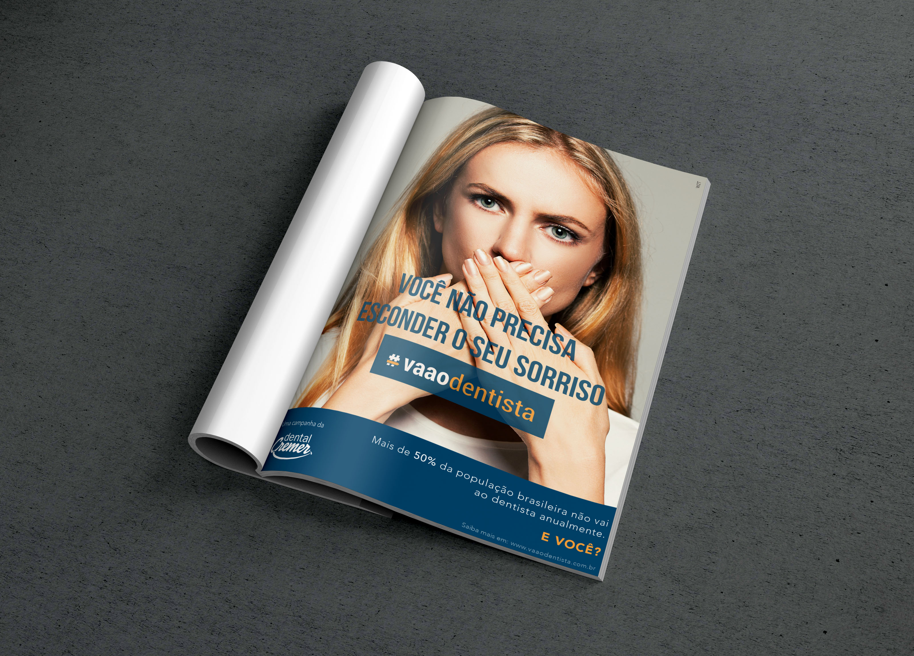

The Brazilian marketing agency W2T had to create an awareness ad for their client Dental Cremer (the biggest dentist material supplier in Brazil) encoraging the population to go to the dentist. The agency hired me to do the job. The project had to have the Dental Cremer DNA and it also had to “shock” the audience, making them think about their habits of going to the dentist. The ad was feature in two Brazilian magazines, Caras and Contigo.
